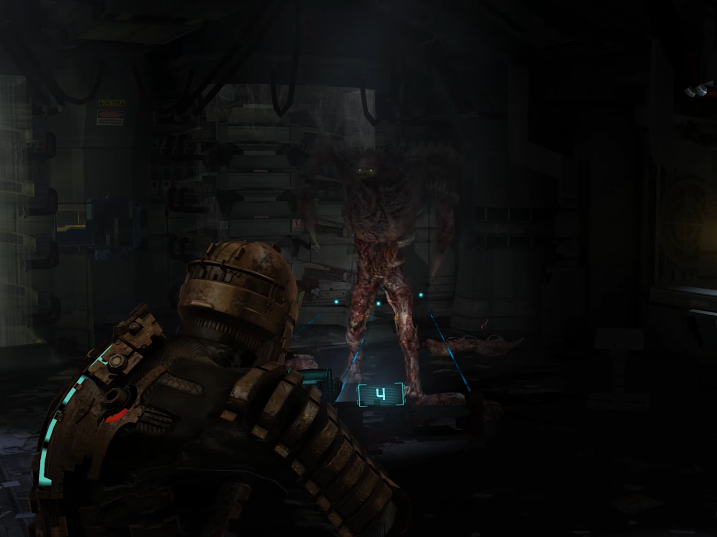
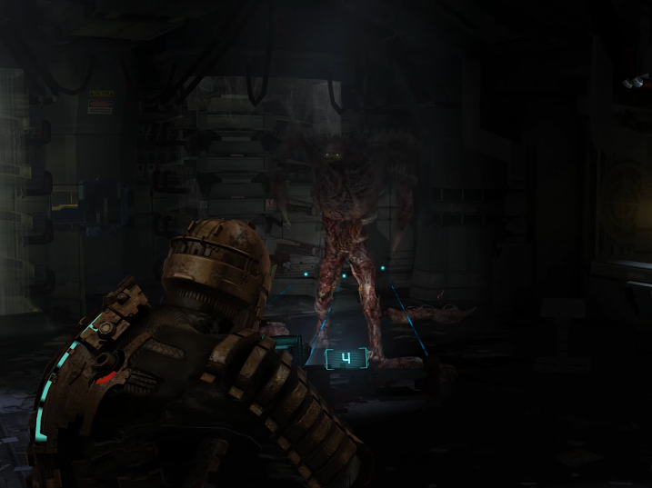

Sos el mecanico espacial Isaac clarke a bordo de la terrorifica nave
Ishimura repleta de necromorfos(bichos raros), necesitas la llave de seguridad para abrir la compuerta
gravitatoria
y escapar pero te topas con un regenerador...tu unica arma para defenderte es una herramienta de
trabajo(cotadora de plasma) con 4 balas
que, aunque poderosa, solo te serviria para cortar sus
extremidades y correr.
¿QUE OPCION TOMAS?